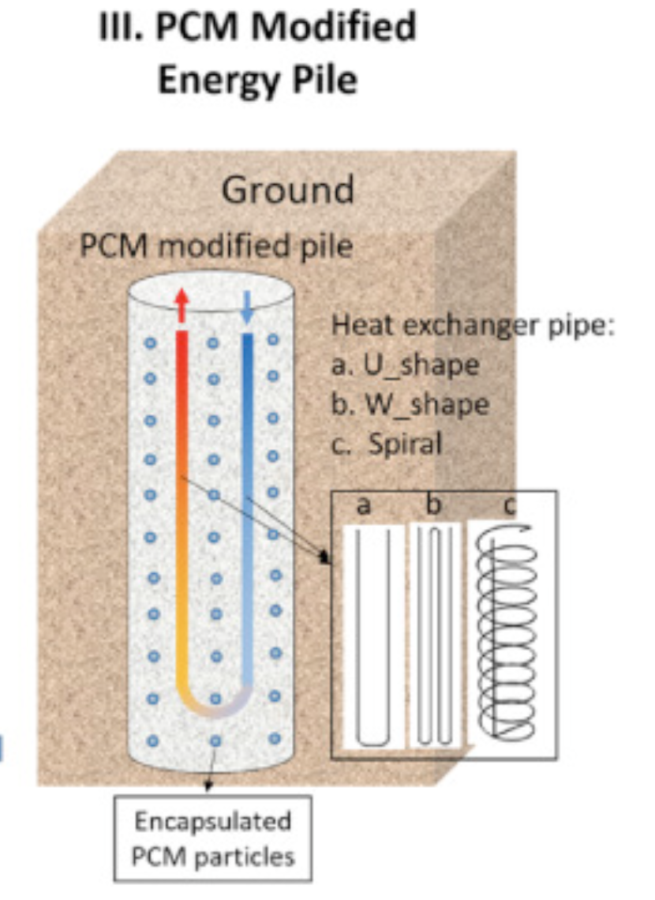

Ice Control
Deicing and Anti-Icing
When left unhandled, snow can quickly condenes into ice, causing major problems with regard to automotive transportation. Due to the many factors involved, including geographical location and intensity of precipitation, no single solution exists for dealing with this problem. Two solutions have emerged over the years, namely deicing and anti-icing. Jing Zhang, Debendra K. Das, and Rorik Peterson discuss these solutions in depth in their paper on effective snow removal and ice control techniques.
The purpose of deicing is to unbind snow and ice from the road after the snow has already condensed into ice. Anti-icing, on the other hand, aims to prevent the initial formation of the ice and avoid the problem altogether.
Deicing Methods
Traditionally, chemical methods have been employed to break the bonds of ice on pavement. By lowering the freezing point of the snow-salt mixture, chemical agents can effectively melt ice and remove it. Common chemicals used in this process include sodium chloride, calcium chloride, and magnesium chloride. However, due to the potentially harmful environmental side effects of these chemicals, other methods for deicing have been developed.
Thermal deicing, on the other hand, is the process of melting ice directly. One such method is running currents through electrically conductive concrete. This concrete is composed of steel fiber, steel shavings, and regular concrete. The former two make up the conductive part of the concrete and are situated on top of the regular concrete and an insulating layer. Electric currents are run through this conductive concrete to then melt the ice directly above. Microwave frequency emitters have also been developed for deicing purposes. Devices mounted on vehicles can emit high energy microwaves and cause ice to melt. Due to scale and setup requirements, thermal deicing methods are, in general, more expensive than chemical methods, but they pose less of a threat to the surrounding environment than do their chemical counterparts.
Anti-Icing Methods
Preventing ice from forming in the first place could be a significant advantage in terms of consequences, or lack thereof. One method of anti-icing involves placing a porous overlay composed of epoxy on top of pavement. This overlay would store aforementioned chemicals to reduce the freezing point of ice, making it less likely that falling snow will condense into ice and become a bigger problem down the line. These overlays have been shown to last several days and reduce accident rates during testing. Another popular method of anti-icing involves simply being prepared for the onset of snow. Road Weather Information Systems, or RWIS, are dedicated weather stations that monitor and predict road surface conditions using data from temperature, wind speed, and humidity. Anticipating a snowfall may constitute a significant advantage in setting up other anti-icing or deicing methods.
Geothermal Applications in Ice Removal
Energy Piles
Energy pile based melting is a process that harvests geothermal energy using heat exchangers embedded in concrete piles. These piles utilize the temperature difference between the ground and the fluid within said heat exchangers to melt ice on top of the pavement. Traditional energy piles, however, are modeled assuming steady state energy transfer, which is not the case in practical application. Chanjun Han and Xiong Yu have developed a new, environmentally friendly, and cost effective energy pile setup using phase change materials to remedy this faulty assumption.
Phase Change Material (PCM)
The aforementioned phase change material has seen many prior applications in engineering due to its high potential for thermal energy storage, meaning it can store and release a significant amount of energy when undergoing a phase transition. PCMs also conserve their volume when exchanging energy, making them unique latent heat storage devices.
The PCM particles used by the team were composed of cyclohexane, a substance with enhanced thermal properties and durability. These particles were encapsulated in a pipe-like structure which was then embedded in concrete. A diagram of the PCM energy pile concrete is shown to the right.

Testing and Applicability
Preliminary testing of PCM energy piles show that it is a cost efficient and effective solution. One initial disadvantage of traditional energy piles is that their application in real world settings is constrained by geographic location, as they rely on high ground temperatures to create an effective heat difference as a source of geothermal energy. PCM energy piles greatly reduce the ground temperature requirement due to their highly effective thermal energy extraction properties. As a further advantage, this means that fewer PCM energy piles can be applied to achieve similar results to regular energy piles. Research has shown that the percentage reduction required to achieve those results is independent of ambient temperature.
This new type of energy pile may see implementation in sidewalks or even individually owned driveways in the future. As mentioned before, few of these piles are required due to their high efficiency, making them highly cost effective, which may put it in reach for many homeowners in the near future. Additionally, this phase change material may not be restricted to only concrete. It could be implemented on rooftops, eaves, and near windows, making deicing and anti-icing comprehensive. One major barrier to its application is the potential cost of reconstruction, as existing concrete would have to be replaced with the new PCM energy piles. This barrier could be alleviated by selecting certain hotspots, or in this case, coldspots, where accidents are more likely to occur and ice is more likely to accumulate.
In conclusion, hope is not lost when snow has condensed into ice. Many methods of deicing and anti-icing are available, and new cost-effective methods are still being developed to this day. Traditional chemical compounds for deicing have environmental side effects, but are effective and cost efficient. Thermal solutions, such as porous overlays and the aforementioned PCM energy piles, are being developed to provide even greater benefits while reducing required costs.